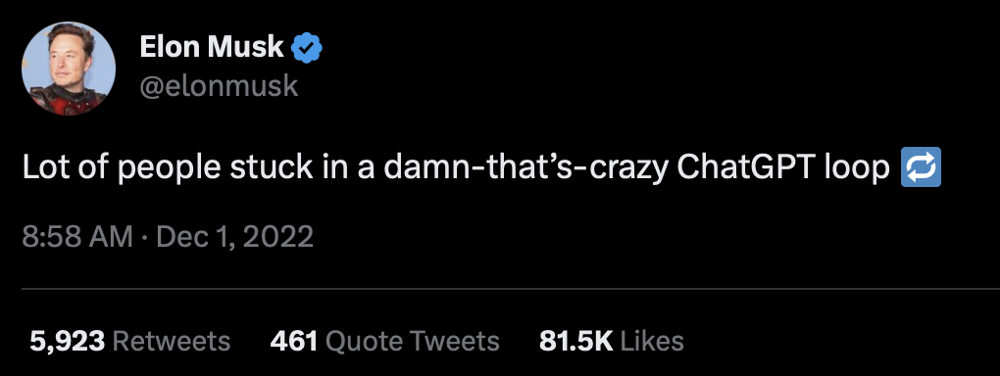

Link to website: https://sites.google.com/uw.edu/info350-madai/final-blog-post
Context
After learning about misinformation and disinformation online and in class, we wanted to create a resource that will not only help educate other internet users (specifically college students and tech professionals interested in learning more about ChatGPT) about MaD and its prevalence in the AI generative model ChatGPT-3. In addition, we specifically wanted to look at ChatGPT for our case study and wanted to dive deeper into the topic by researching and providing an analysis of some of the different industries that ChatGPT affects.
Our website has many features: it starts with the definitions of misinformation and disinformation (MaD), covers 2 case studies regarding ChatGPT use and MaD, goes into ChatGPT usage in two infrastructures, and features a quiz to help solidy MaD differences and gauge what users think of ChatGPT.
Ultimately, our goal is to educate users so they can react consciously and learn to fight against mis/disinformation in AI as well as to start thinking about ChatGPT's impacts as it moves forward in our society.
Inspirations
As we delve into the issue of misinformation and disinformation, we must recognize that it is a significant challenge facing society today, especially with the advancement of artificial intelligence. We, as a community, need to understand the root causes of these problems to effectively combat them. One of the primary reasons for the prevalence of misinformation and disinformation is due to the power dynamics at play. Certain groups or individuals may purposely distribute false information to gain an advantage or influence public opinion. However, it is also possible for individuals to inadvertently spread misleading content without verifying its accuracy.
We are researching and addressing these issues because of the rapid development of technology and the internet, which has made it easier for false or malicious information to reach a broader audience. Social media platforms, in particular, have played a significant role in the spread of misinformation and fake news, with algorithms recommending and personalizing content to users. The consequences of misinformation and fake news can be severe, affecting public health, politics, and the economy, as well as leading to mistrust and division among people. As AI models like ChatGPT continue to evolve, the risks and consequences of false/misleading information only increase, making it even more critical to address these issues.
Moreover, we aim to understand ChatGPT's impact on social infrastructure, especially in education and cybersecurity, as these are essential fields for students. As mentioned in our MaD case studies, ChatGPT has made many misinformation errors that can easily fool those who are not viewing its answers with a skeptical lens, one of which is the Shaq and Yao Ming height comparison case (Luceri, Cardoso, and Giordano, 2021). This was an inspiring case study for us, as it is one of the clear ways that ChatGPT has shown misinformation that can easily be debunked using common sense or other resources on the internet. By analyzing this example in our case study, we wanted to help users realize that ChatGPT seems like it is sometimes still in its beta stages, and there is plenty of room for improvement. It's examples like these that make us worried for those that are not aware of MaD, and thus we wanted to make a website to help users gain skills to be conscientious online.
With a better, more cautious understanding of ChatGPT's effects, we can work towards creating a more informed and educated society. In addition, Kaplan emphasizes the negative impact of misinformation and fake news on society, highlighting the need for action to combat this issue (Kaplan, 2020). We hope that our website can help prepare users to identify and become immune to MaD, and act as a reliable source, like Kaplan writes that we need more of in society, to help fight against fake news. By educating ourselves and others, we can work towards creating a more informed and democratic society.
Motivations
As a team of student researchers who are learning about AI and developed an interest in MaD, as mentioned before, we are always seeking ways to improve our understanding of them. But what keeps us going? By understanding AI through our society’s infrastructures, and MaD, we are able to handle more technology as it integrates into our society in the future. By looking at the infrastructures that we are inspired by, we can consider how AI might affect us personally and the environments around us while moving forward. Considering that MaD appears in nearly any form at any time, we can also prepare for when AI melds with MaD to create a complicated situation.
As a team, not only do we want to round out our own understanding of the effects of ChatGPT, but we want to also help others like us understand how MaD AI affects our infrastructure as well. Seeing as our society still has issues catching up to new technologies which are giving infrastructures a run for their money, combined with the digital divide making MaD proliferate, we are curious about how ChatGPT might behave as another layer onto these issues (Maryville University, 2020).
Using case studies as a caveat for ChatGPT usage, we can help others who are not as used to ChatGPT feel more comfortable with understanding the technology. With this understanding, we hope that our website viewers would feel more inclined to think about the morality of ChatGPT and MaD through engaging with our quiz which further familiarizes them with MaD and gives philosophical questions related to whether they believe ChatGPT is good or bad. When it comes down to it, our goal is to get people thinking about ChatGPT and MaD, and what better way than to put them through a series of scenarios on our website that relate to their lives?
Looking at Curtis's work from the University of Melbourne, he attempts to discuss the implications of ChatGPT by himself in a scholarly article, however, we don't believe that this is very useful. Instead, our team opts to bring people into the discussion by being their guide and presenting scenarios and questions, as we mentioned before. It is one thing to look at another person's analysis. but it is another to be able to go through the analysis yourself with a hands-on approach, such as our quiz or our case studies.
The fact that we can influence people to question the things around them in order to come to better conclusions is what drives us, along with the idea that we ourselves might be able to learn in the process.
Conclusions
Our website, "MaD AI", is dedicated to exploring the intersection of misinformation and disinformation using ChatGPT as a case study. Our primary objective is to educate people about ChatGPT and its impact on technology. Furthermore, we aim to raise awareness regarding the negative consequences of disinformation, and how technology such as ChatGPT can exacerbate these issues. Despite OpenAI's policy against using ChatGPT for deception or manipulation, its easy accessibility makes it vulnerable to the spread of false information.
Our website endeavors to highlight how technology like ChatGPT can affect our daily lives and society as a whole. Through case studies and quizzes, we strive to engage viewers and encourage them to reflect on the morality of ChatGPT and MaD. In essence, our website provides users with definitions, case studies, and a quiz to help them comprehend the difference between misinformation and disinformation and how ChatGPT can propagate both. We also aim to equip users with information about the potential dangers of MaD in AI and encourage them to be conscientious and learn to combat misinformation and disinformation.
We achieved what we wanted with this website, as we were able to create a resource that not only introduces users to the world of MaD, but also ties in deep dives into two realms that ChatGPT affects. If we were to continue to pursue this project, we would want to analyze more infrastructures that ChatGPT will affect/is affecting, and maybe find some more examples to input into our quiz. We would also want to explore other AI generative models, such as Bing's new AI Chatbot, and compare its case studies with ChatGPT's to see how MaD is prevalent in both.
Link to website: https://sites.google.com/uw.edu/info350-madai/final-blog-post
Images by Freepik